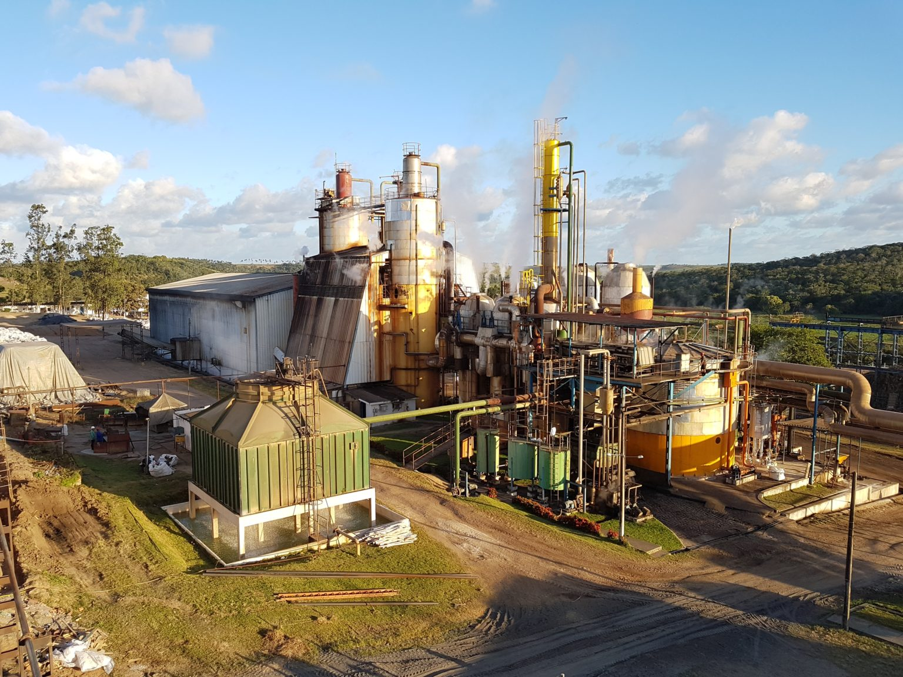

Nossos Produtos
A feira reune o que há de melhor na produção dos cooperados. Os produtos se dividem em três grandes grupos:
Hortifrúti
-
Verduras:
- Alface
- Couve
- Coentro
-
Frutas:
- Manga
- Acerola
- Banana
Produtos de origem animal
- Ovos caipiras
- Mel
- Queijo coalho
Artesanato
- Peças em palha
- Bordados
Tabela de Preços
Preços praticados na última feira (podem variar conforme a safra):
| Produto | Unidade | Preço (R$) |
|---|---|---|
| Alface | Maço | R$ 3,00 |
| Ovos caipiras | Dúzia | R$ 12,00 |
| Mel | Pote 500g | R$ 25,00 |
| Queijo coalho | Quilo | R$ 40,00 |
Regras dos Feirantes
Para manter a organização e a qualidade, todo feirante deve seguir os passos abaixo, nesta ordem:
- Chegar até as 5h30 para montar a barraca.
- Identificar a barraca com o nome do cooperado.
- Manter os produtos limpos e bem apresentados.
- Recolher todo o lixo ao final da feira.
A feira é a vitrine do nosso trabalho. Capricho na barraca é respeito com quem compra.